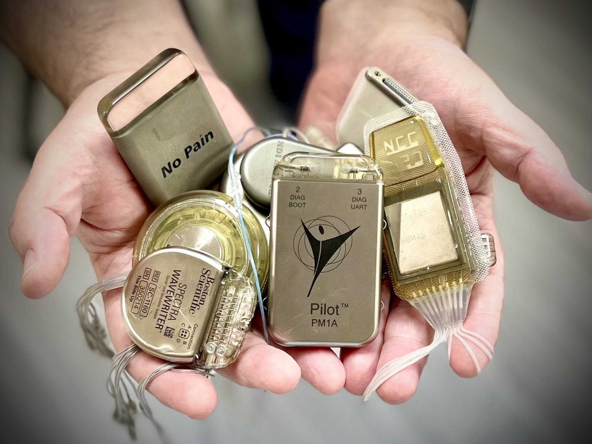

Patient support
Hands-on continuity for active devices
Programmer access, replacement components, and clinician coordination so existing implants keep doing their job.
When manufacturers walk away from implantable medical devices, the people who depend on them are left without support. Give-A-Hand.tech exists so they can keep benefiting from these devices for the rest of their lives.

Give-A-Hand.tech’s mission is to serve as an adoptive home for people with, or who could benefit from, abandoned implantable medical devices. GIVE-A-HAND.tech will enable people to gain access to, and keep benefitting from, these devices for the remainder of their lifetimes.
Programmer access, replacement components, and clinician coordination so existing implants keep doing their job.

Documentation preserved as a public resource.
We're just getting off the ground, but we intend to offer a range of services to enable people with implanted devices to keep using them even after the devices have been abandoned by the commercial market.
GIVE-A-HAND.tech is pleased to announce the first ever “Abandoned Implant Technology Support Grants”, available to anyone in the neurodevice field.
Short talks on what we’re doing, why the name, why current solutions fail, and the path forward.
We have decades of experience helping maintain implanted devices for the people who benefit from them. If you’d like to be part of this team, let us know.